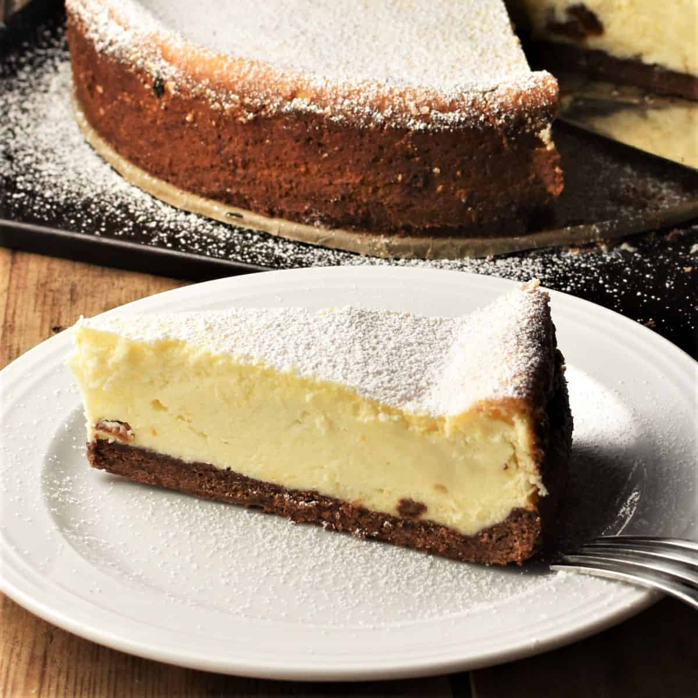

Sernik is a cheesecake from Poland, stemming from old Christian and Jewish traditions. It is made with eggs, sugar, and twaróg - a type of curd cheese that has been used in desserts for hundreds of years. It is believed that sernik originated in the 17th century, when King Jan III Sobieski brought the recipe with him after his victory against the Turks at the Battle of Vienna.
Meal prep time : 2 hours 45 minutes
Servings : 12